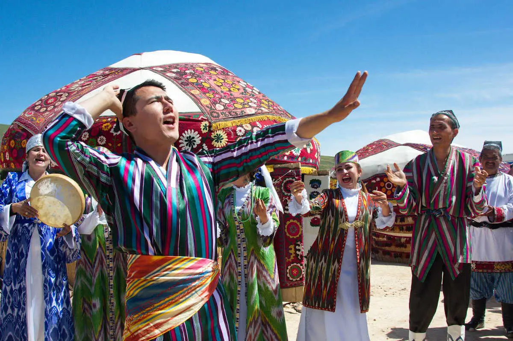

Sharq Taronalari
Sana: Har ikki yilda bir marta (avgust)
Joy: Samarqand
Mavzu: Xalqaro musiqa bayrami

Asrlar Sadosi
Sana: Yoz oylarida (joylashuv har yili o‘zgaradi)
Joy: Turli tarixiy hududlar
Mavzu: Tarixiy madaniyat va hunarmandchilik

Boysun Bahori
Sana: Har yili may oyida
Joy: Surxondaryo viloyati, Boysun tumani
Mavzu: Folklor va milliy urf-odatlar

Hunarmandchilik Festivali
Sana: Har ikki yilda, sentabr oyida
Joy: Farg‘ona viloyati, Qo‘qon shahri
Mavzu: An’anaviy hunarmandchilik va xalqaro madaniy almashinuv